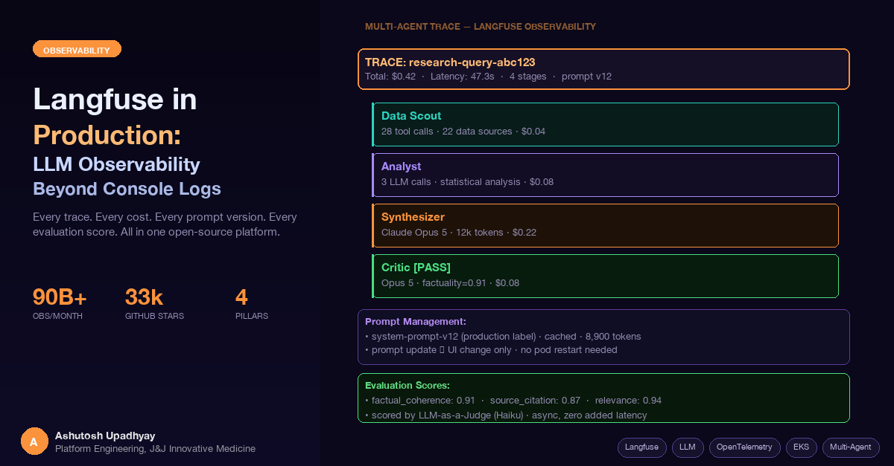

Your agent answered a question. Was it correct? How long did it take? What did it cost? Did it use the right prompt version? Langfuse answers all of those — and makes the answers actionable.
A traditional web service fails loudly — a 500 status, a timeout, an exception in the logs. An LLM agent fails quietly. It answers with apparent confidence, spends $0.40, takes 12 seconds, and returns a response that's subtly wrong. Your application metrics show a successful request. Your users get a bad answer. Console logs tell you the call happened. They don't tell you whether it was good, what it cost, whether it used the latest prompt, or why the Critic stage took four times longer than usual.
That's the gap LLM observability fills. After running a four-stage multi-agent AI system in production for six months, here is what Langfuse actually surfaces — and what we would have missed without it.
Langfuse describes itself as "an open-source AI engineering platform that helps teams collaboratively debug, analyze, and iterate on their LLM applications." (langfuse.com). The numbers: 33.6k GitHub stars, 90 billion observations processed per month, used by 21 of the Fortune 50. Version 3 introduced a ClickHouse backend for trace storage, delivering up to 165× faster query performance on large trace datasets. Version 4 built on that foundation with full-text search, advanced filtering, new Metrics and Observations APIs, and threshold-based alerts.
The platform has four pillars, and they are more integrated than they first appear:
The integration matters because a quality regression shows up first in your evaluation scores, which link to the traces, which show you the exact prompt version that was active. Without that linkage you have three separate investigations. With it, you have one.
Our production setup runs on EKS. Each pod in the four-stage pipeline — Data Scout, Analyst, Synthesizer, Critic — instruments with standard OpenTelemetry. An ADOT (AWS Distro for OpenTelemetry) collector sidecar attaches to each pod and fans out traces to two backends simultaneously: CloudWatch for infrastructure metrics and Langfuse for LLM-specific traces.
EKS Pod (any stage)
├── Application (OpenTelemetry instrumented)
│ └── OTLP spans → localhost:4317
└── ADOT Collector (sidecar)
├── CloudWatch Exporter → CloudWatch (pod metrics, error rates)
└── OTLP Exporter → Langfuse (LLM traces, token costs, evals)
The ADOT sidecar pattern: one instrumentation, two observability backends.
The OTLP exporter is configured to point at the Langfuse ingest endpoint:
from opentelemetry import trace
from opentelemetry.sdk.trace import TracerProvider
from opentelemetry.sdk.trace.export import BatchSpanProcessor
from opentelemetry.exporter.otlp.proto.http.trace_exporter import OTLPSpanExporter
import base64
# Basic auth header from Langfuse public/secret key pair
langfuse_auth = base64.b64encode(
f"{LANGFUSE_PUBLIC_KEY}:{LANGFUSE_SECRET_KEY}".encode()
).decode()
exporter = OTLPSpanExporter(
endpoint="https://cloud.langfuse.com/api/public/otel/v1/traces",
headers={"Authorization": f"Basic {langfuse_auth}"}
)
provider = TracerProvider()
provider.add_span_processor(BatchSpanProcessor(exporter))
trace.set_tracer_provider(provider)The Langfuse SDKs send data asynchronously, batched in the background. There is no latency added to the request path — the application responds to the user while trace events are flushed in the background.
A single user research query that travels through all four pipeline stages produces one coherent trace tree in Langfuse:
The key to getting one coherent tree across four separate pods is W3C trace context propagation. The orchestrator injects the traceparent header into each HTTP call to a sub-agent; each sub-agent extracts it and starts its span as a child of the parent trace:
import requests
from opentelemetry.propagate import inject, extract
from opentelemetry import trace
# Orchestrator: inject context into outbound call
def call_sub_agent(url: str, payload: dict) -> dict:
headers = {"Content-Type": "application/json"}
inject(headers) # adds traceparent, tracestate
return requests.post(url, json=payload, headers=headers).json()
# Sub-agent: extract context from inbound request
def handle_request(raw_headers: dict, payload: dict):
ctx = extract(raw_headers)
with trace.get_tracer(__name__).start_as_current_span(
"analyst-stage", context=ctx
) as span:
result = run_analyst(payload)
span.set_attribute("output.tokens", result["token_count"])
return resultWhy this matters: without context propagation you get four isolated traces with no visible relationship. With it, the Langfuse UI shows the full query lifecycle — latency breakdown per stage, total cost across all LLM calls, and the exact inputs and outputs at each step. Debugging a slow or incorrect response goes from "which pod was responsible?" to "the Data Scout spent 38 seconds on one API, here's the exact response it got."
Langfuse tracks per-token costs by model. You configure the model pricing in Langfuse's model settings — input cost per 1M tokens, output cost per 1M tokens. For most models this is straightforward.
For Claude Opus 5 with extended thinking enabled, there is a catch: extended thinking tokens are billed as output tokens — the more expensive rate, not input. The thinking block (the model's internal reasoning before its final response) appears as a separate field in the API response. Additionally, when thinking blocks are replayed into subsequent turns as context, they are billed as input tokens at that point. If your Langfuse model configuration counts thinking tokens at the input rate (or ignores them entirely), your cost estimates will be significantly lower than actual AWS Bedrock invoices.
The fix: ensure your Langfuse model pricing entry tracks thinking tokens at the output token rate, not the input rate. After the correction, our estimates aligned with actual invoices within 2–3%. Before the fix, Opus 5 queries appeared 30–40% cheaper than they actually were — which skewed the model comparison data and made Opus 5 look more cost-efficient relative to Sonnet than it actually is.
With correct cost tracking, you can pull per-model cost breakdowns from the Langfuse API and expose them directly in a monitoring endpoint:
from langfuse import Langfuse
from datetime import datetime, timedelta, timezone
langfuse = Langfuse()
def get_cost_summary(days: int = 30) -> dict:
"""Pull cost breakdown from Langfuse for the monitoring dashboard."""
since = datetime.now(timezone.utc) - timedelta(days=days)
# Langfuse Observations API — filter by model and date range
obs = langfuse.api.observations.get_many(
from_start_time=since,
type="GENERATION"
).data
by_model = {}
for o in obs:
model = o.model or "unknown"
cost = (o.calculated_total_cost or 0)
by_model[model] = by_model.get(model, 0) + cost
return {"period_days": days, "cost_by_model": by_model}Cost data from a typical month in our system:
| Stage | Model | % of Total Cost | Avg Cost/Query |
|---|---|---|---|
| Data Scout | Claude Sonnet | 18% | $0.04 |
| Analyst | Claude Sonnet | 22% | $0.05 |
| Synthesizer | Claude Opus 5 | 38% | $0.18 |
| Critic | Claude Opus 5 | 22% | $0.11 |
Synthesizer and Critic together account for 60% of cost despite handling only the final two stages. That's the correct tradeoff for a research workload where synthesis quality is the primary deliverable — but you can't make that judgment without the data.
Our system prompt is approximately 8,900 tokens. It includes domain-specific reasoning heuristics, tool usage guidelines, output format instructions, and examples. We iterate on it regularly — roughly once a week based on evaluation feedback and user corrections.
With the prompt hardcoded in the application, each iteration requires a code change, a code review, a build pipeline run, and a pod restart. For a weekly cadence, that's 52 deployments per year that exist solely to change text. With Langfuse Prompt Management, the prompt lives in Langfuse and the application fetches it at start:
from langfuse import Langfuse
langfuse = Langfuse()
_cached_prompt: str | None = None
def get_system_prompt() -> str:
global _cached_prompt
if _cached_prompt is None:
prompt_obj = langfuse.get_prompt(
"agent-system-prompt",
label="production"
)
_cached_prompt = prompt_obj.compile()
return _cached_promptThe SDK caches the response in memory. Subsequent calls to get_system_prompt() return immediately without a network call. Updating the prompt in the Langfuse UI and flipping the production label to the new version takes effect on the next pod start — or immediately if you add cache invalidation logic. No deployment required.
The version linkage: every trace in Langfuse records which prompt version was active when that query ran. When a new version degrades quality — which you see in the evaluation score trends — you can diff the two versions, identify the change, and revert by flipping the label back. The full audit trail is in Langfuse: when each version was deployed, which traces it affected, and what the quality scores looked like before and after.
One important note about prompt caching on AWS Bedrock: the system prompt is a prime candidate for Bedrock's prompt caching feature. Cache hits on the 8,900-token system prompt reduce input token costs by roughly 80% for that prefix. Bedrock's prompt cache is server-side — a pod restart doesn't clear it. The most likely cause of deployment-correlated cost spikes is the deployment gap exceeding the cache TTL (default 5 minutes; up to 1 hour with the extended cache_control option). If a rolling deployment takes longer than the TTL, the first queries after the rollout pay full input cost for the entire system prompt. Langfuse makes this visible as a cost spike in the cost-per-query trend immediately after a deployment — which is the signal to extend your cache TTL.
A trace tells you what happened. An evaluation tells you whether it was good. Langfuse provides three evaluation paths and we use all three.
After each production query completes, a lightweight post-processing step sends the Critic's final output to Claude Haiku for automated evaluation on three dimensions: factual coherence (0–1), source citation quality (0–1), and query relevance (0–1). Each score is appended to the trace as a named score. This runs asynchronously after the user receives their response — zero latency impact.
from langfuse import Langfuse
langfuse = Langfuse()
def score_response(trace_id: str, response: str, query: str):
"""Called async after the main response is returned."""
# Use Haiku as the judge — cheap, fast, good enough for these dimensions
scores = evaluate_with_llm(response, query) # returns dict of dimension→float
for dimension, value in scores.items():
langfuse.create_score(
trace_id=trace_id,
name=dimension,
value=value,
comment="automated LLM-as-judge evaluation"
)Traces where the Critic rejected the Synthesizer's output are automatically routed to a Langfuse annotation queue. A human reviewer reads the original query, the rejected synthesis, and the Critic's rejection reason, then marks the rejection as either valid (the synthesis had a real problem) or false positive (the Critic was overly strict). This ground-truth data is used to calibrate the automated judge — specifically to tune the factual coherence threshold that triggers a rejection.
Before deploying a new prompt version to production, we run an offline experiment: take a dataset of 50 representative historical queries (stored in Langfuse Datasets), run both the current production prompt and the candidate prompt against them, and compare the LLM-as-judge scores. If the candidate's average factual coherence score drops more than 5% relative to the current prompt, it doesn't go to production.
This gates deployments on quality, not just test coverage. The experiment history in Langfuse shows every prompt version ever tested, the scores it achieved, and whether it was promoted to production.
These are concrete things Langfuse revealed that were invisible before we had it:
| What we found | How we found it | Impact without Langfuse |
|---|---|---|
| Thinking token billing — Opus 5 extended thinking billed as output tokens (not input), not reflected in initial cost model | Cost-per-query trend showed 30–40% variance from Bedrock invoices | Model comparison data systematically wrong; Opus 5 appeared more efficient than it is |
| Prompt cache miss spike — pod restarts cause cache cold-start, 8× cost per query for first N queries after restart | Cost-per-query trend showed periodic spikes correlated with deployment timestamps | Cost anomalies attributed to usage patterns, not deployment events |
| Critic rejection rate drift — increased from 4% to 11% over three weeks | Critic rejection score trend in custom dashboard | Quality degradation discovered by users, not by the team |
| Data Scout latency outlier — one external API at p95 = 45 seconds, dominating total query latency | Per-stage latency breakdown in trace waterfall | Total query p95 latency blamed on LLM calls; root cause never identified |
The Critic rejection rate drift is the one that sticks with me. The rejection rate increased gradually over three weeks — well within the noise of day-to-day variance. No user complained explicitly; the Critic was doing its job. The synthesis was getting rejected, the user got a message saying the agent wasn't confident enough, and they moved on. Without the score trend in Langfuse, this would have looked like normal variance for months. The actual cause: a new data source we'd ingested had lower-quality summaries that were finding their way into synthesis inputs. The Critic was right to reject them.
Langfuse is fully open source and can be deployed within your own cloud account. For regulated environments where sending production LLM inputs and outputs to a SaaS platform requires governance review, self-hosting keeps all trace data within your account boundary.
Langfuse v4 on EKS requires four dependencies:
| Component | Purpose | AWS option |
|---|---|---|
| PostgreSQL | Application metadata, user data, prompt versions | RDS Aurora PostgreSQL |
| ClickHouse | Trace storage and analytics (introduced in v3) | Self-managed on EKS or ClickHouse Cloud |
| Redis/Valkey | Caching, queuing | ElastiCache |
| S3 | Blob storage for large trace payloads | S3 + IRSA for pod access |
The official AWS Terraform module provisions all four plus the Langfuse application itself. For lighter setups — particularly when you already have the dependencies running — the Helm chart deploys just the application containers.
IRSA for S3: use IRSA to give the Langfuse pods access to the S3 bucket rather than static credentials. The service account annotation pattern (eks.amazonaws.com/role-arn) works cleanly here. Avoid mounting AWS credentials as environment variables into the Langfuse pods — the S3 bucket will contain production LLM inputs and outputs.
Langfuse handles the LLM-specific layer. It doesn't replace infrastructure observability — it complements it. Our full observability stack:
| Layer | Tool | What it catches |
|---|---|---|
| LLM traces & quality | Langfuse | Bad answers, cost anomalies, prompt version regressions, evaluation score trends |
| Pod & service metrics | Prometheus + Grafana | Memory pressure, request queue depth, stuck pods, circuit breaker state |
| Infrastructure & AWS | CloudWatch | Node health, EKS control plane events, Bedrock API errors, billing anomalies |
Each layer catches failure modes the others miss. Langfuse catches a Critic rejection rate drift. Prometheus catches the pod that's consuming 7GB of memory and approaching its limit. CloudWatch catches the Bedrock API error spike when a model is temporarily unavailable in a region. Together they give a complete picture. None of the three alone does.
traceparent headers between sub-agents to get one coherent trace tree across a multi-pod pipeline — not four isolated traces.